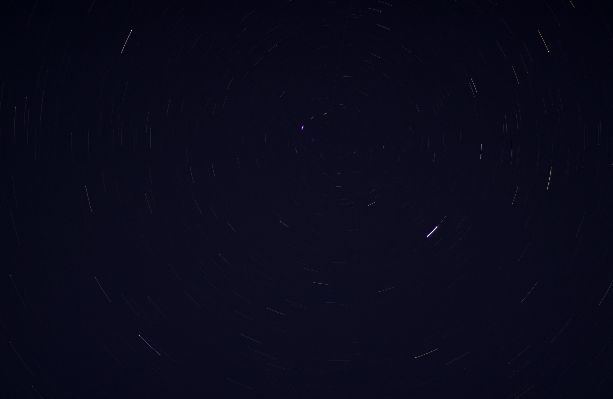

PANOPTES
Contributed to the successful upgrade and installation of the PANOPTES astronomical telescope units as part of a collaborative project involving international experts and local educational institutions.



Engaged in the assembly, modification, and testing of hardware components including camera and control boxes. Participated in software configuration and communication setup to optimize telescope functionality.
This experience enhanced technical skills in telescope instrumentation and teamwork in a multidisciplinary environment.